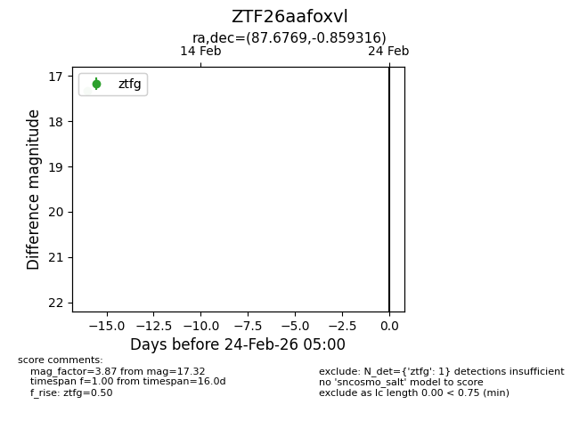
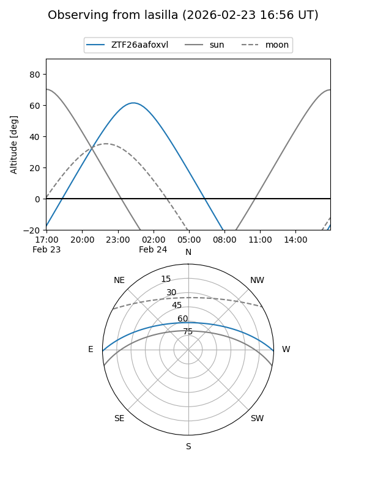
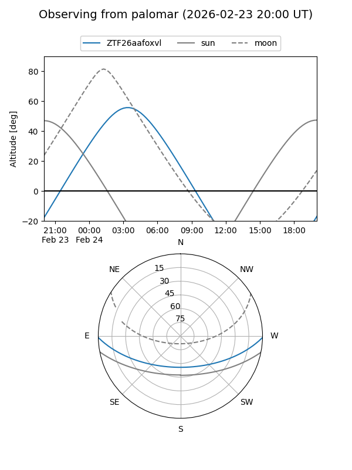

ZTF26aafoxvl
Target ZTF26aafoxvl at 2026-02-24 09:08
Aliases and brokers:
FINK: link
Lasair: link
ALeRCE: link
alt names
ZTF26aafoxvl (ztf,fink_ztf)
Coordinates:
equatorial (ra, dec) = 87.6769,-0.85932
equatorial (HMS+DMS) = 05:50:42.46,-00:51:33.54
galactic (l, b) = (206.6599,-13.88040)
Flags:
Photometry:
last ztfg=17.32
1 ztfg detections
Lightcurve

Visibility


Additional plots